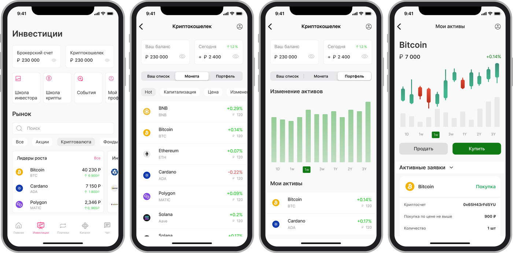
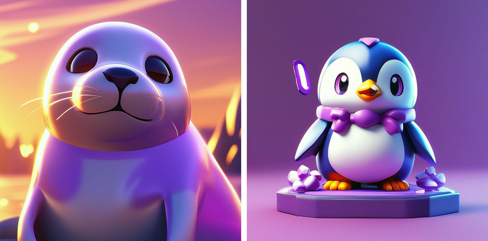

Комплексная стратегия привлечения молодёжи к открытию брокерских счетов в Ренессанс Банке, разработанная в составе команды стажёров «Марс» — проект занял 1 место.
В составе команды стажёров нужно было разработать для Ренессанс Банка стратегию привлечения молодёжной аудитории 18–35 лет к открытию брокерских счетов. Молодые пользователи редко доходили до открытия счёта: воспринимали инвестиции как что-то сложное и рискованное, а существующие материалы и интерфейс были ориентированы на более опытную и финансово подкованную аудиторию. Консультировались с отделом брокериджа, отделом развития технологий и карточных продуктов и отделом корпоративной культуры банка.
Проанализировали конкурентов — Robinhood с его дробными акциями без комиссии и геймификацией, «Тинькофф Пульс» с социальной лентой инвесторов, «Охоту за акциями» Альфа-Банка с мини-курсами и мини-играми — и построили стратегию из трёх последовательных блоков: привлекаем, заинтересовываем, удерживаем.
Привлекаем. Студенческая стипендиальная карта Ренессанс Банка с кэшбэком и бесплатным участием в семинарах по инвестициям, плюс коллаборации с YouTube-блогерами студенческой аудитории. Отдельная акция «Портфель «Новичок»» — начальный набор бумаг, который нельзя продать в течение месяца, чтобы познакомить новичка с рынком без риска импульсивно всё распродать.
Заинтересовываем. «Интерактивная копилка инвестора» — маскот в духе тамагочи, который решает сразу две проблемы новичков: нехватку знаний и неумение планомерно копить. Маскот обучает основам инвестирования, выдаёт daily-задания и меняет настроение в зависимости от активности пользователя — я прорабатывала несколько визуальных концептов персонажа для этой роли.
Удерживаем. Крипто-брокеридж внутри приложения: опрос показал, что 93% клиентов банка хотя бы немного знакомы с криптовалютой и 62% положительно относятся к её покупке через банк, но их сдерживают страх мошенничества и высокие комиссии. Спроектировала экраны раздела «Инвестиции» — брокерский счёт и криптокошелёк на одном экране, список монет с изменением цены и портфель с графиком динамики активов.


Собрали план в презентацию с бюджетом и сроками по каждому блоку — общий бюджет всей стратегии оценили в 18 млн рублей на 16 месяцев работы — и защитили перед менторами и представителями бизнеса.
Проект занял 1 место среди работ потока стажёров. Команда представила банку целостную воронку — от первого касания с молодёжной аудиторией через студенческую карту и коллаборации с блогерами до удержания через геймификацию и криптоброкеридж, — с оценкой бюджета и сроков на каждом этапе.